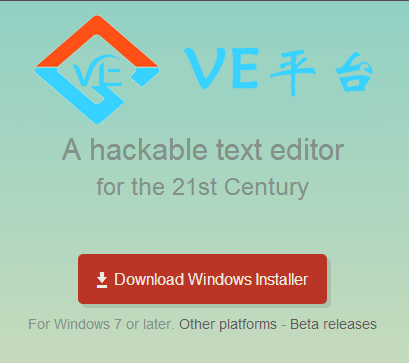
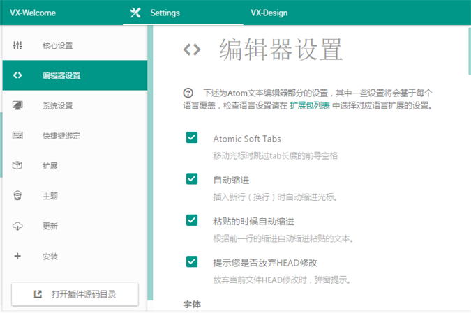
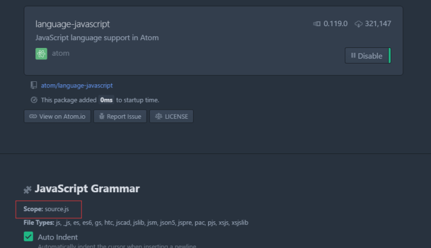
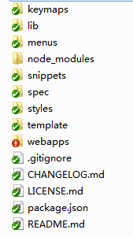

VE平台
VE，中文名微昳，是一款轻巧、简单、优雅的VX前端集成开发平台！帮您定制您的前端VX项目。
VE，中文名微昳，是一款轻巧、简单、优雅的VX前端集成开发平台！帮您定制您的前端VX项目。
VE平台（中文名：微昳平台） 是科蓝公司VX团队，基于 Atom专门为前端工程师推出的一款跨平台文本编辑器。具有简洁和直观的图形用户界面，并有很多有趣的特点：支持PE-VX，CSS，HTML，JavaScript等网页编程语言。它支持宏，自动完成分屏功能，集成了文件管理器。
基于Web开发的VE平台编辑器具有很多优点：
VE平台绿色版下载：可进入下载页面 http://115.182.90.204:8082/vxDesign/index.html#/app/ClassicalDesk进行下载。直接点击下载
按钮进行下载。直接解压文件即可。 
解压完成，目录下生成两个文件：
简洁、易操作的编辑界面，感受编码的便捷。
执行Atom文件夹下的
atom.exe
启动
File->Settings
进入设置中心（默认快捷键
ctrl+,
） 
左侧有以下几个设置分类：
.atom
文件夹
使用前需要配置一些常用设置项：
| 设置分类 | 设置项 | 设置内容 |
|---|---|---|
| 核心设置 | 文件编码 | utf-8 |
| 编辑器设置 | 自动缩进 | 选中 |
| 字体 | Windows默认使用Consolas字体，可以自定义，写上字体名称即可 | |
| 字体大小 | 设置字体大小 | |
| 行高 | 设置行高，默认1.5 | |
| 显示缩进指示线 | 选中 | |
| 显示行号 | 选中 | |
| 自动换行 | 选中（md文件中不起效） | |
| Tab的长度 | 4 |
atom中默认的快捷键，需要注意与其他软件的热键冲突（比如某企鹅），当然这些快捷键可以在
.atom/keymap.cson
文件中自定义：
| 英文 | 中文 | 快捷键 | 功能 |
|---|---|---|---|
| New Window | 新建界面窗口 | Ctrl + Shift + N | 如中文意思 |
| New File | 新建文件 | Ctrl + N | 如中文意思 |
| Open File | 打开文件 | Ctrl + O | 如中文意思 |
| Open Folder | 打开文件夹 | Ctrl + Shift + O | 如中文意思 |
| Add Project Folder | 加载项目目录 | Ctrl + Alt + O | 如中文意思 |
| Reopen Last Item | 重新加载上次项目 | Ctrl + Shift + T | 如中文意思 |
| Save | 保存文件 | Ctrl + S | 如中文意思 |
| Save As | 另存为 | Ctrl + Shift +S | 如中文意思 |
| Close Tab | 关闭当前编辑文档 | Ctrl + W | 如中文意思 |
| Close Window | 关闭编辑器 | Ctrl + Shift + W | 如中文意思 |
| Undo | 撤销 | Ctrl + Z | 如中文意思 |
| Redo | 重做 | Ctrl + Y | 如中文意思 |
| Cut | 剪切 | Ctrl + X | 如中文意思 |
| Copy | 复制 | Ctrl + C | 如中文意思 |
| Copy Path | 复制文档路径 | Ctrl + Shift + C | 如中文意思 |
| Paste | 粘贴 | Ctrl + V | 如中文意思 |
| Select All | 全选 | Ctrl + A | 如中文意思 |
| Select Encoding | 选择编码 | Ctrl + Shift +U | 就是设置文件的编码 |
| Go to Line | 跳转到某行 | Ctrl + G | 支持行列搜索,Row:Column |
| Slect Grammar | 语法选择 | Ctrl + Shift + L | 和Sublime的Syntax设置功能一样 |
| Reload | 重载 | Ctrl+ Alt +R | 重新载入当前编辑的文档 |
| Toggle Full Screen | 全屏 | F11 | 如中文意思 |
| Increase Font Size | 增大字体 | Ctrl + Shift + “+” | Sublime的Ctrl + 也能生效 |
| Decrease Font Size | 减小字体 | Ctrl + Shift + “-” | Sublime的Ctrl - 也能生效 |
| Toggle Tree View | 展示隐藏目录树 | Ctrl + | | Sublime的Ctrl+K,+B这里也可以生效 |
| Toggle Commadn palette | 全局搜索面板 | Ctrl + Shift + P | 和Sublime的大同小异 |
| Select Line | 选定一行 | Ctrl + L | 如中文意思 |
| Select First Character of Line | 选定光标至行首 | Shift + Home | 如中文意思 |
| Slect End of Line | 选定光标至行尾 | Shift + End | 如中文意思 |
| Select to Top | 选定光标处至文档首行 | Ctrl + Shift + Home | 就是光标处作为分割线,取文档上部分 |
| Select to Bottom | 选定光标处至文档尾行 | Ctrl + Shfit + End | 就是光标处作为分割线,取文档下部分 |
| Find in Buffer | 从缓存器搜索 | Ctrl + F | 与Sublime一致 |
| Replace in Buffer | 高级替换 | Ctrl + Shift + F | 与Sublime一致 |
| Select Next | 匹配选定下一个 | Ctrl + D | 和Sublime一模一样有木有 |
| Select All | 匹配选定所有 | Alt + F3 | 和Sublime一模一样有木有 |
| Find File | 查询文件,选定打开 | Ctrl + P | 与Sublime不一样 |
| Delte End of Word | 删除光标处至词尾 | Ctrl + Del | 如中文意思 |
| Duplicate Line | 复制当前行追加到后面 | Ctrl + Shift + D | 如中文意思 |
| Delete Line | 删除一行 | Ctrl + Shift + K | 如中文意思 |
| Toggle Comment | 启用注释 | Ctrl + / | 与Sublime一致 |
| Toggle developer tools | 打开Chrome调试器 | Ctrl + Shift + I | 神奇啊 |
| Indent | 增加缩进 | Ctrl + [ | 向右缩进 |
| Outdent | 减少缩进 | Ctrl + ] | 向左缩进 |
| Move Line Up | 行向上移动 | Ctrl + up | 如字面意思 |
| Move Line Down | 行向下移动 | Ctrl + Down | 如字面意思 |
| Join Lines | 行链接 | Ctrl + J | 追加 |
| newline-below | 光标之下增加一行 | Ctrl + Enter | 与sublime 一致 |
| editor:newline-above | 光标之上增加一行 | Ctrl + Shift + Enter | 与sublime 一致 |
| pane:show-next-item | 切换编辑的标签页 | Ctrl + Tab | 如中文意思 |
| Fuzzy Finder | 文件跳转面板 | Ctrl + T | 如字面意思 |
| Select Line Move above | 选中行上移 | Ctrl + up | 如中文意思 |
| Select Line Move below | 选中行下移 | Ctrl + down | 如中文意思 |
| Symbol-view | 进入变量、函数跳转面板。 | Ctrl + R | 如中文意思 |
Atom作为一开源的编辑器提供了大量实用、神奇的插件，并且时刻涌入着新鲜的插件，这里有两种载入插件的方法：
File→settings→Install→输入插件名
进入设置中心并查询插件，点击安装：

（如果您更青睐 npm 命令，可跳过安装apm工具，在随后的第二步中执行 npm install 命令）
apm（Atom 包管理器的命令行工具）
找到安装的Atom安装包，路径 *\Atom\resources\app\apm下找到apm.cmd文件，将该路径配置到环境变量的path中;
配置完成后在命令行执行apm -version如果出现以下情形则表示apm安装成功：
本地安装插件：
第一步需要将插件代码文件夹放到.atom/package中；
第二步进入插件的文件夹，执行apm install
命令行 
基本上插件都有二度设置，都有readme可查看详细信息，也可以进入源码定制，鼠标点击实现高度自定义，很人性化......
常用插件推荐，默认快捷键都可以在
keymap.cson
中更改
|
插件名
|
用法
|
|
autocomplete-plus
|
输入的时候提供候选项（好像自带）
|
|
javascript-snippets
|
js代码补全，用法可看readme，（强大的自定义！）
|
|
color-picker
|
取色器，快捷键ctrl+alt+c
|
|
script
|
根据文件名称、或所选代码快、或行号执行代码，支持大多数编程语言，ctrl+shift+p执行script相关语句
|
|
emmet
|
快速完成代码，参照emmet官方文档，tab
|
|
autocomplete-paths
|
自动匹配引入文件路径工具
|
|
atom-html-preview
|
html文档预览工具，快捷键ctrl+shift+H
|
|
atom-beautify
|
一键美化代码格式，快捷键ctrl+alt+B
|
|
browser-plus
|
内部打开浏览器，快捷键ctrl+alt+o
|
|
sync-settings
|
插件备份，按键绑定备份（需配置github，见配置同步）
|
|
pigments
|
颜色显示插件
|
|
angularjs
|
关于angularjs的插件，里面包含了ng-代码补全（可以根据这个改vx snippets）
|
|
plateformio-ide-terminal
|
命令行终端
|
|
highlight-selected
|
高亮所有和当前选中单词一样的单词
|
|
regex-railroad-diagram
|
正则表达式图形化
|
|
tortoise-svn
|
svn工具（需在事先下载好的svn工作空间中执行操作）
|
|
tool-bar + tool-bar-almighty
|
工具栏
|
|
minimap
|
源码缩略预览图
|
|
custom-title
|
给atom设置个性化标题
|
|
css-snippets
|
css代码提示
|
|
simplified-chinese-menu
|
Atom的简体中文语言包，完整汉化
|
高度自定义，配置你自己的编辑器。
snippet 即代码提示，通过输入关键字生成相应的代码片段，也可以通过快捷方式快速生成常用代码。
许多 Core 包和 Community 包都捆绑了它们自带的代码段，这些代码段只能用于它们自身。例如，language-html 包就为 HTML 语法高亮和语法提供了支持，并且带有很多代码段；类似的还有：language-java、language-javascript、language-php等语言包。
File > Snippets
菜单，打开
snippets.cson
文件。修改之后，只要保存了文件，Atom 就会重新加载这个文件，就可以立即使用了。
snip
快速生成代码段模板）
#snippets.cson文件
#单snip选择器写法
'.source.js':
'console.log':
'prefix': 'log'
'body': 'console.log(${1:"crash"});$2'
#多snip写法：（相同作用域的snip要放在同一选择器下，选择器只能写一个，不然会覆盖）
#html
'.text.html.basic':
# A
'Anchor':
'prefix': 'a'
'body': '<a href="${1:#}">$2</a>$0'
#可以使用 CoffeeScript多行语法的 """ 来创建长模板。
'Abbreviation':
'prefix': 'abbr'
'body': """
<div>
<abbr title="$1">$2</abbr>$0
</div>
"""
语法解释（以上述
console.log
为例）：
'.source.js':
最外边的键是选择器，表明这些代码段在哪些文件中才能生效。要想知道这个键的值，最简单的方法就是：进入代码段语言所对应的语言包中，查看
Scope
字符串，如下图的js语言包的scope就是
source.js
。（注意：键值就是
. + Scope
，并且同一个snippets.cson文件中的选择器不能重复，不然会覆盖） 
'console.log':
这一层的键是代码段名称，用于在代码段提示菜单中添加的描述。你可以自由命名。
prefix
和 当代码段被触发时将要插入的代码
body
'body'
中，每一个带有数字的 $ 就是一个 tab 键驻留位置。只要代码段被触发，便可以通过 Tab 键遍历这些 tab 驻留位置
将所有的代码片段都集中在一个文件中不是一个好方法，可以通过添加文件夹将片段以文件形式模块化：
插件中添加
snippets
文件夹，文件夹名强制，文件名自定义，按照上述格式在文件中直接新建、配置，重启后生效
vx定制了一套适用于vx开发的插件——
atom-vx
，里面提供了一些适用与vx开发的功能，并在逐步完善中。
| 功能名 | 功能描述 |
| window reload | 重启编辑器 |
| VX web layout | 可视化布局 |
| VX http server
(start on port 3000~9000) |
默认浏览器启动在对应端口启动服务 |
| VX http server
(stop all server) |
关闭所有服务 |
| 欢迎页 | VE平台欢迎页面及简单使用介绍 |
| VX-API | vx接口说明文档 |
| VX-Design | 定制化VX设计 |
| New HTML5 page | 新建VX模板文件——H5的html文件 |
| New Controller | 新建VX模板文件——控制器模板 |
| New Directive | 新建VX模板文件——指令模板 |
| Open Terminal | 调用系统的命令框 |
通过编写插件可以实现定制化功能。
以atom-vx插件为例，完成的插件包含如下文件夹：
